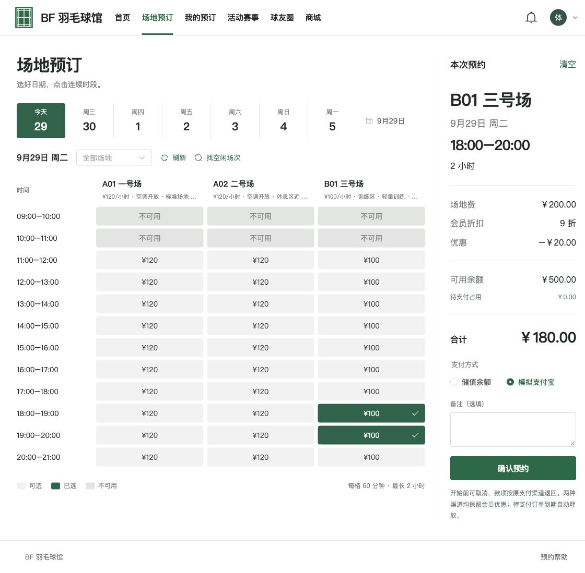
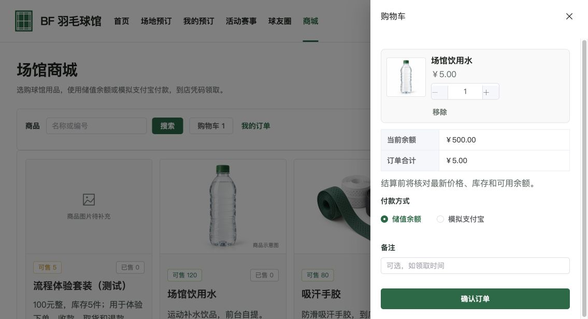
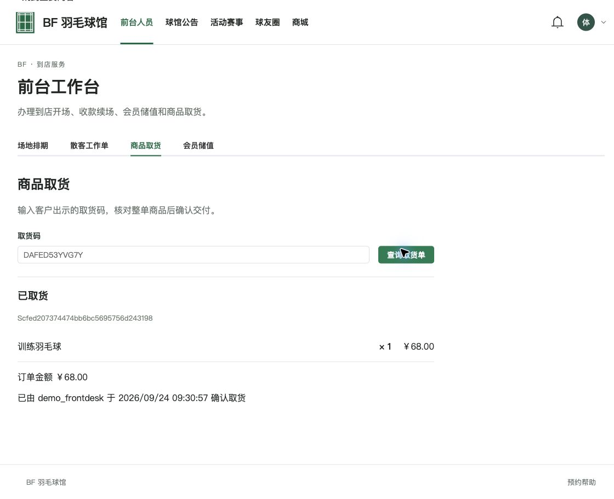
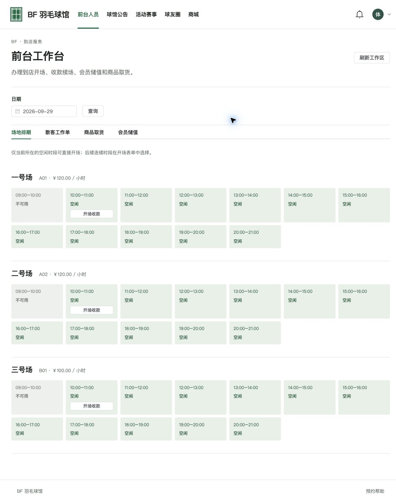
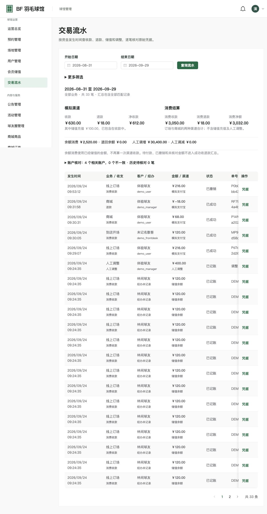

Work / Venue Operations · Transactions · Vue 3 / Tornado
BF Badminton
A full-stack venue platform connecting online reservations, walk-in court use, member top-ups, store pickup and financial reconciliation, with dedicated workspaces for customers, front-desk staff, administrators and maintenance staff.
- Full-stack Developer
- Venue Workflows & Transaction Integrity
- Tornado / Vue 3 / Redis
- No. 03

Beyond Booking: Support the Daily Work of a Venue
BF Badminton starts with a shared court schedule for online and walk-in service, connecting member accounts, payment orders, stock, pickup credentials, events and community features. Customers book and purchase; front-desk staff handle walk-ins, top-ups and collection; administrators manage operations and permissions; maintenance staff have read-only access to maintenance schedules.
The frontend uses Vue 3, TypeScript, Pinia, and Element Plus. The backend uses Tornado's asynchronous request model with an aiomysql pool and asynchronous Redis client for network and database I/O.
Screenshots captured on 2026-09-29 show the local isolated demo, with the original Chinese interface; most historical transactions date to September 24. Payment is an in-project simulation, not the official Alipay sandbox or a real transfer. Production HTTPS deployment, WeChat public-account linking and physical scanning devices require separate acceptance. Select an image to open its original.

Protect Court Use and Payments with Transactions, Row Locks and Idempotency
New bookings now use MySQL transactions as the authoritative boundary. FOR UPDATE locks the relevant court rows before checking active bookings, maintenance blocks and confirmed prices; reservations, payment orders and audit records commit together. Online booking, walk-ins, extensions and rescheduling share conflict rules. Redis still handles verification codes, tokens and existing temporary locks, but is no longer the primary safeguard against duplicate occupancy in new bookings.
The repository records a run through real Tornado HTTP routes with JWT and role checks: macOS arm64, Python 3.14.3, MySQL 5.7.28 and a pool limit of 10. Each scenario used one initial request followed by 200 requests with a concurrency cap of 20.
| Scenario | P50 (ms) | P95 (ms) | Failures / samples |
|---|---|---|---|
| Store checkout quote | 15.39 | 17.93 | 0 / 200 |
| Simulated store collection | 61.00 | 74.46 | 0 / 200 |
| Global ledger query | 305.47 | 349.48 | 0 / 200 |

From Continuous-Slot Recommendations to Quotes and Rescheduling
Customers can select consecutive slots or supply an earliest start, duration and court preference to find fully available windows. Prefix sums identify contiguous openings; candidates are ranked by start-time deviation, preference, price and fragmented gaps. Up to three suggestions include reasons. A recommendation does not hold a slot: availability is checked again when booking.
Before confirmation, the quote shows list price, member discount, amount due and available balance, with stored value or project-internal simulated Alipay. Changed prices or benefits require reconfirmation; valid pending orders retain their agreed price snapshot. Cancellation, expiration and rescheduling handle resource release and price differences separately. Refunds return to the original payment channel, so simulated Alipay refunds do not credit the member wallet.

A Membership Account Beyond Discount Labels
The member center manages tier, expiry, balance, points and account history. Front-desk staff or administrators can process simulated top-ups, preserving the reason, operator and related business record. Pending holds are shown separately from available balance, allowing customers to reconcile top-ups, spending, refunds and manual adjustments rather than seeing only a balance.
Event registration, the player community, announcements, and notifications extend the platform across transactions, organization, and community engagement instead of limiting it to a booking tool.

Payment Is Not the End: Make Collection Traceable
Checkout rechecks price, stock and available balance and supports stored value and simulated Alipay. Pending orders reserve stock; successful payment creates a pickup QR code and readable code. Front-desk staff or administrators look up the order before confirming whole-order collection. Each order can be redeemed only once. A refund request freezes collection, and a completed refund invalidates the credential.
Shared Business Records, Clearly Separated Roles
Front-desk staff open courts for unregistered walk-in customers at the full-slot list price. Arriving at 14:10 for 14:00–15:00 still incurs the full slot charge and ends at 15:00. Adjacent extensions, payments and operators remain traceable. Front-desk staff cannot publish events or announcements; maintenance staff only view reasons and scheduled windows, with reopening controlled by administrators.
Explain Each Receipt, Not Just a Revenue Total
The global ledger distinguishes channel receipts, top-ups, wallet spending and refunds, so a 100-yuan top-up followed by 100 yuan of wallet spending does not become 200 yuan of channel receipts. An ended booking is not proof of attendance: attendance rate and recording coverage are reported separately, and manual adjustments are kept out of operating receipts.